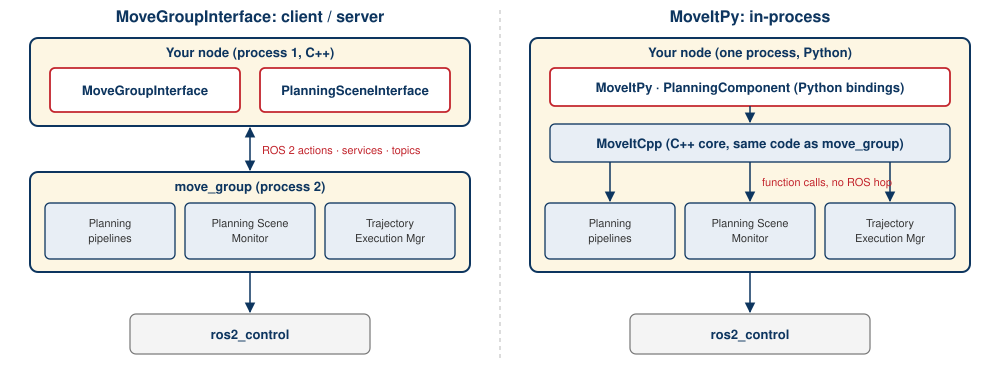

layout: true <div class="header"><img src="../../../common/logo/ros_industrial_logo.png" alt="ROS-Industrial" style="background-color:transparent"/></div> <div class="footer"><img src="https://www.ipa.fraunhofer.de/content/dam/ipa/ipa.svg" /><p>© Fraunhofer IPA</p></div> <div class="triangle"></div> --- class: center, middle name: main_title # MOVEIT 2 – PROGRAMMING APIS ### MoveGroupInterface (C++) vs MoveItPy (Python) Runnable examples: [github.com/ROS-Industrial-Session-Common/moveit_examples](https://github.com/ROS-Industrial-Session-Common/moveit_examples) – UR5e, FR3, GP50, Piper (mock hardware) --- class: dense ## Ways to command MoveIt | Interface | Language | Where MoveIt runs | Typical use | |-----------|----------|-------------------|-------------| | RViz MotionPlanning plugin | GUI | `move_group` | Try goals, debug, check the config | | **MoveGroupInterface** | C++ | `move_group` (your node is a client) | Applications; most tutorials | | **MoveItPy** | Python | inside your process | Python applications, scripting, notebooks | | MoveItCpp | C++ | inside your process | Low latency, custom pipelines, research | | ROS 2 actions / services | any | `move_group` | Other languages, tools: `/move_action`, `/execute_trajectory`, `/plan_kinematic_path`, `/compute_ik`, `/compute_cartesian_path`, `/apply_planning_scene` | | MoveIt Task Constructor | C++ (Python bindings) | your node + `move_group` | Multi-step tasks (deck 5) | .note[`moveit_commander`, the ROS 1 Python client of `move_group`, does **not** exist in ROS 2: it was a boost::python wrapper of the C++ MoveGroupInterface that relied on ROS 1 internals. MoveItPy replaces it, with a different design (MoveIt in-process) and API.] --- ## Two architectures <p></p> .note[Both use the same C++ core (planning pipelines, Planning Scene Monitor, Trajectory Execution Manager) and the same config package. The difference is **where** it runs.] --- class: dense, small-code ## MoveGroupInterface: the essentials .cols[ .sixty[ ```cpp #include <moveit/move_group_interface/move_group_interface.hpp> // The node must spin (executor in a thread): current state, action results moveit::planning_interface::MoveGroupInterface arm(node, "ur_arm"); arm.setMaxVelocityScalingFactor(0.5); arm.setNamedTarget("home"); // SRDF group_state arm.setJointValueTarget(joint_values); // one value per joint arm.setPoseTarget(pose_stamped, "egu50_tool0"); // pose of the tip link moveit::planning_interface::MoveGroupInterface::Plan plan; if (arm.plan(plan)) arm.execute(plan); ``` ▶ Run: `docker compose run --rm mgi_03_pose_goal` (`ROBOT=ur|fr3|gp50|piper`)<br/> Code: [move_group_interface_examples/src/](https://github.com/ROS-Industrial-Session-Common/moveit_examples/tree/main/move_group_interface_examples/src) · [example_utils.hpp](https://github.com/ROS-Industrial-Session-Common/moveit_examples/blob/main/move_group_interface_examples/include/move_group_interface_examples/example_utils.hpp) ] .forty[ - **No MoveIt parameters needed**: the robot model comes from the `/robot_description` and `/robot_description_semantic` topics - Every call is a **ROS request** to `move_group` - Settings stay active until changed: clear targets and constraints between motions - Also: `getCurrentPose()`, `getCurrentJointValues()`, `setPlanningPipelineId()`, `setPlannerId()`, `setPathConstraints()`, `computeCartesianPath()` - `PlanningSceneInterface`: add / remove / attach objects (also a `move_group` client) - Jazzy headers end in `.hpp`; link `moveit_ros_planning_interface` ] ] --- class: dense, small-code ## MoveItPy: the essentials .cols[ .sixty[ ```python from moveit.planning import MoveItPy, PlanRequestParameters robot = MoveItPy(node_name="moveit_py") # MoveIt in this process arm = robot.get_planning_component("arm") arm.set_start_state_to_current_state() # goal: configuration_name, robot_state, # or pose_stamped_msg + pose_link arm.set_goal_state(configuration_name="home") result = arm.plan() # or plan(single_plan_parameters=...) if result: robot.execute(result.trajectory, controllers=[]) # direct access to the planning scene with robot.get_planning_scene_monitor().read_write() as scene: scene.apply_collision_object(box) ``` ▶ Run: `docker compose run --rm py_03_pose_goal`<br/> Code: [moveit_py_examples/moveit_py_examples/](https://github.com/ROS-Industrial-Session-Common/moveit_examples/tree/main/moveit_py_examples/moveit_py_examples) ] .forty[ - `MoveItPy` = the robot: model, Planning Scene Monitor, trajectory execution - `PlanningComponent` = one planning group - The node needs **all** MoveIt parameters (`MoveItConfigsBuilder(...).moveit_cpp("moveit_py.yaml").to_dict()`) + `moveit_py.yaml`: scene monitor topics, pipelines, named plan requests - `move_group` is not needed (it can still run for RViz and other clients) - Jazzy: MoveItPy crashes when destroyed at exit ([moveit2#3721](https://github.com/moveit/moveit2/issues/3721)): the examples exit with `os._exit(0)` after `rclpy.shutdown()` - Install: `ros-jazzy-moveit-py` ] ] --- class: dense ## MoveGroupInterface vs MoveItPy | | MoveGroupInterface | MoveItPy | |---|---|---| | Language | C++ | Python (bindings of MoveItCpp) | | Process model | client of `move_group` (actions, services) | MoveIt runs **inside** your process | | Needs `move_group` | yes | no | | Parameters for your node | none (model from topics) | all MoveIt parameters + `moveit_py.yaml` | | IK in your code | `/compute_ik` service (client-side IK needs the kinematics parameters) | `RobotState.set_from_ik()` | | Planning scene | messages via `PlanningSceneInterface` | direct read/write access: `with psm.read_write() as scene:` | | Shared scene | one scene in `move_group` for all clients | one scene **per MoveItPy instance** | | Parallel planning | one pipeline per request | several pipelines in parallel (`MultiPipelinePlanRequestParameters`) | | Cartesian path | `computeCartesianPath()` | no helper: Pilz LIN, or the `/compute_cartesian_path` service | | RViz MotionPlanning panel | same `move_group`: what you plan is what RViz shows | talks to `move_group`, not to your MoveItPy instance | | Maturity | most used, many tutorials | newer, smaller API, some rough edges | --- ## Which one should I use? .cols[ .fifty[ #### MoveGroupInterface - C++ application nodes - Several nodes share **one** planning scene (one `move_group`) - You need Cartesian paths, attach/detach helpers, many tutorials - You want RViz and your code to see the same scene ] .fifty[ #### MoveItPy - Python applications, quick experiments, Jupyter notebooks - Direct access to the planning scene, robot state, IK, collision checks and trajectories - Parallel multi-pipeline planning - Single application node that owns the robot ] ] <br/> **Both:** same config package, same planners, same controllers. Switching later costs code, not configuration. The examples repository has the **same ten examples in both APIs**: compare them side by side. .note[C++ in-process alternative: `moveit_cpp::MoveItCpp` + `PlanningComponent` (the C++ API that MoveItPy wraps).]